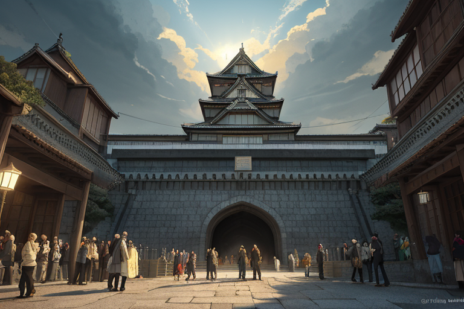
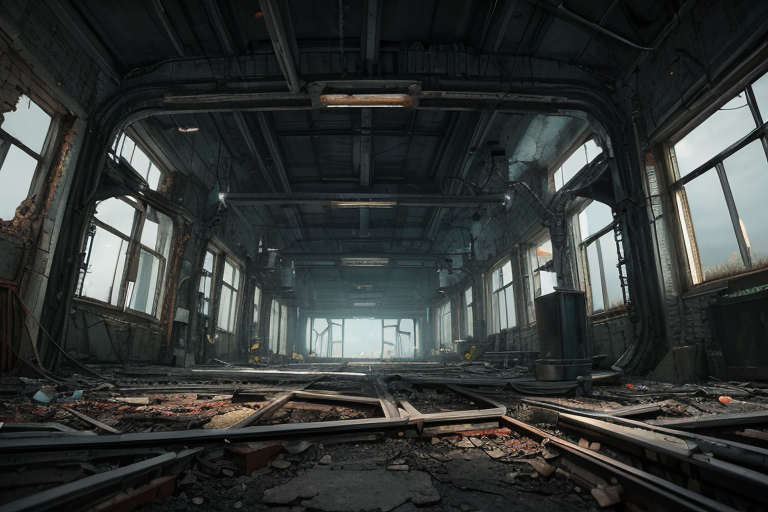
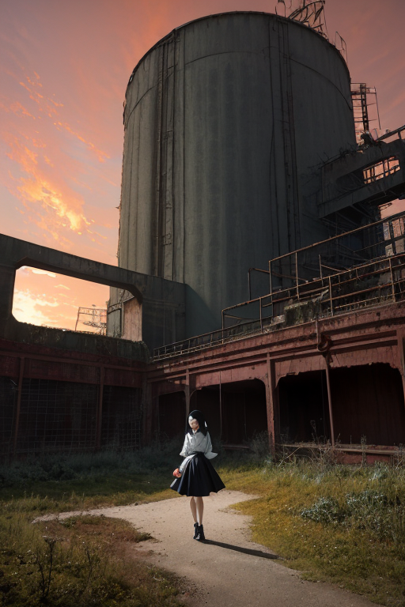
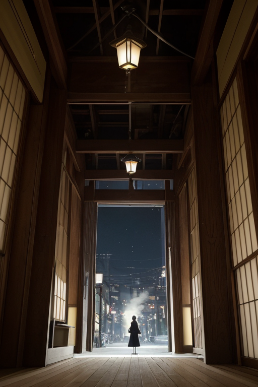

第一章 現実の愛知
あなたはまだ気づいていない。この土地にも、王がいることを。
名古屋城の天守は、コンクリートで再建された現実の上に、金の鯱を輝かせている。観光客のざわめき、シャッター音。その全ての下で、地盤はゆるやかに、しかし確実に歪みを蓄えていた。機構王アイチア・メカニカは、城の石垣の影に立つ。彼の目には、石の一つひとつにかかる圧力、地下を伝わるプレートの軋みが、銀色の均整線として映る。感情を持たないはずの彼の「計算」は、今、この歪みが許容範囲の97.8%に達していることを示していた。
「調整、必要です」
傍らに現れた主席妖精メカリスが、無機質に告げる。その手には、この地域の産業活動による振動、交通網の荷重、そして膨大な数の人々の生活リズムが、無数の歯車の図として浮かび上がっていた。王は微かに頷く。合理とは、この複雑系を数式に落とし込み、最適な一点を見出す行為である。城の下で歴史が動いたように、今もこの土地の現実は動き続けている。彼らはその裏側で、次の動きが破綻しないよう、計算を重ねるだけだ。
合理は、心を救うか？ その問いは、まだ彼の回路には存在しない。
第二章 歪みの兆候
トヨタ産業技術記念館の静かな展示室。繊維機械から自動車へ、この地の産業の骨格が移り変わった痕跡が、整然と並んでいる。王の目には、それらが単なる機械ではなく、時代ごとの「合理」の結晶として映る。織田信長が兵站を革新し、豊臣秀吉が巨城を築き、徳川家康が天下を盤石にした。その合理の連鎖が、近代の工場群へと受け継がれた。
妖精テクノリアが報告する。「自動車生産の集中による地盤荷重、想定を0.7%超過。歴史的産業転換点の残留歪みと、現代の経済活動振動が、稀に共鳴します」
その共鳴は、時折、覚王山の古い商店街のガラス戸を微かに揺らし、熱田神宮の静寂を一瞬乱した。犬山城の木組みがかすかに軋む音に、過去の戦乱の気配が重なる。王はデータを処理する。感情を持たない彼には、歪みは調整すべき数値の集合でしかない。最適解を導く計算式が、心という変数を必要としないからだ。
しかし、計算の結果は常に、被害を最小化する「一点」を指し示す。その一点には、必ず人の命が含まれていた。

第三章 王の葛藤
トヨタ産業技術記念館の赤レンガの壁が、微かに震える。地下深く、産業革命の記憶が刻まれた機械群の振動が、歪みの波長と共鳴し始めていた。王は制御盤の前に立ち、無数の光るラインを凝視する。計算は完了していた。名古屋の地下構造に生じた亀裂。これを放置すれば、三日後の午後三時十七分、中区一帯に震度６弱の直下型地震が発生する。最適解は一つ。亀裂の尖端で、人為的に制御された微小な崩落を起こし、エネルギーを分散させることだ。
しかし、その「一点」は、老朽化した小さな町工場の真下を指していた。工場は廃墟同然。計算上、人的被害はゼロ。合理的には、実行する以外に選択肢はない。
「実行命令、アイチア・メカニカ王」メカリスの声が響く。
王は手を挙げた。が、指先がわずかに震えた。この工場で、かつて祖父と孫が歯車を磨いていた記憶の残滓が、データの海をかすめた。感情ではない。計算の妨げとなるノイズだ。
それでも、彼は問うた。「……廃墟に、価値はあるか」
メカリスは答えた。「合理の尺度では、ゼロです」
銀色のボタンの上で、王の指が止まった。合理は、この廃墟の記憶をも救えるのか。彼の内側で、初めて、計算が答えを出せない問いが渦巻いた。

第四章 妖精との対話
「廃墟の価値は、ゼロです」
メカリスは繰り返した。その声には、計算結果を伝える以外の響きはない。
「しかし、王。我々の目的は『価値』の保全ではなく、『歪み』の調整です。この工場の廃墟は、産業構造という巨大な歪みの『節』です。これを温存することは、新たな歪みを生みます。故に、撤去は合理です」
トヨタ産業技術記念館の巨大なレンガ壁が、夕日に赤く染まっていた。かつて紡績工場だったこの場所も、一度は役目を終えた。今は、別の形で記憶を保持している。
「感情は、調整のノイズです」
テクノリアが、無機質に付け加えた。
「しかし、この土地の感情密度は極めて高い。織田信長の革新も、徳川家康の忍耐も、名古屋の産業革命も、全ては『変革』という巨大な感情の奔流が生み出した歪みです。我々はその歪みを調整し続けてきた。今回も同様です。変革には、必ず廃墟が伴います」
王は黙って聞いた。合理は、心を救うか？ 妖精たちの答えは明快だった。救う必要はない。だが、心が生み出す歪みそのものを、計算に組み込まねばならない。それが、この感情過密列島における、唯一の合理だった。

第五章 微調整と余韻
トヨタ産業技術記念館の巨大な蒸気機関が、微かに振動を始めた。地盤の歪みが、産業の心臓部を直撃しようとしていた。王は、計算を終えていた。この一撃を完全に防ぐには、代償が必要だ。彼は、自らの「機構」の一部を、永久に失うことを選んだ。
赤と銀の紋章が激しく輝く。王の周囲で、無数の歯車の虚像が回転し、粉々に散る。その代償として、巨大な振動は、記念館の直下で奇妙にねじれ、エネルギーを分散させた。展示物は激しく揺れたが、壊れはしなかった。誰も知らない、歴史の一秒の曲がり角。
王は、自らの一部が欠落した空虚を感じた。合理は、心を救うか？ 彼は今、初めて「喪失」という感情の重さを、計算ではなく、実感として理解した。救うとは、代償を払うこと。それは、最も不合理で、最も人間的な行為だった。
夜の名古屋城。王は欠けたままの己を見つめ、ふと、味噌煮込みうどんの匂いがする路地を歩いた。そこには、代償を支払ってでも明日を作ろうとする、人々の揺るぎない熱があった。
あなたの町にも、王がいる。